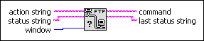

FTP Status VI
Owning Palette: Intermediate FTP VIs
Requires: Base Development System
Displays the status of an FTP transaction. Use this VI only to open or close the status window.
(NI Linux Real-Time) The FTP server is disabled by default, and you cannot use it in safe mode. National Instruments recommends using WebDAV as the file transfer mechanism for improved security.

 Add to the block diagram Add to the block diagram |
 Find on the palette Find on the palette |